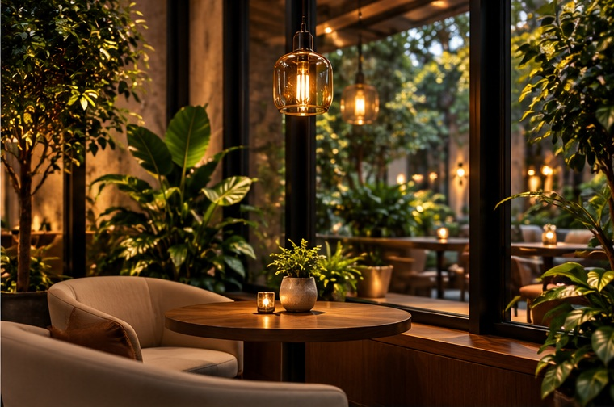

Craft
Thoughtful drinks, simple ingredients and attention to the small details.
OUR STORY
Caffinity is a café concept built around rich coffee, comforting food and easy conversations.
Not loud. Not hurried. Just enough warmth to make a room feel alive. Caffinity blends café culture with a calm, modern interior so the space can shift with your day.
Morning laptop session? Afternoon catch-up? Evening dessert? The same room can hold all three without losing its character.
Good coffee starts the conversation. Good spaces keep it going.
THE CAFFINITY PHILOSOPHYThoughtful drinks, simple ingredients and attention to the small details.
A visual and physical space designed to feel warm, grounded and welcoming.
A place where ideas, friendships and quiet moments can share the same table.
The Caffinity look uses warm wood, charcoal frames, textured stone, greenery and soft golden light. The result is a visual identity that feels polished without feeling precious.
See the space →